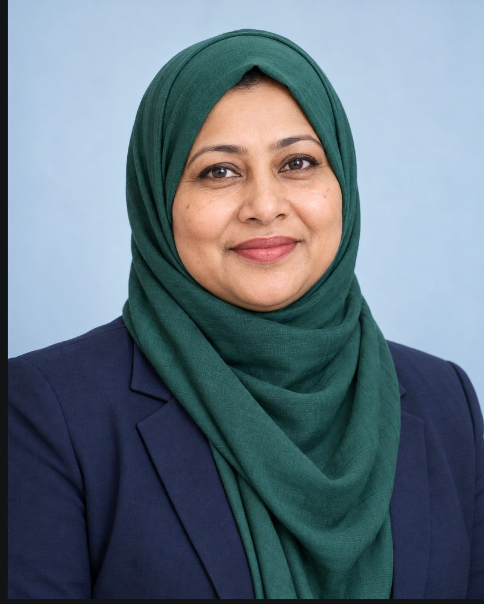

Chairperson’s message
Ferdous Ara

Education is part of life itself. Alongside academic learning, the school aims to support students’ personal development, creativity and confidence, helping them discover their abilities.
A supportive learning environment brings together study, sports, cultural activities and co-curricular opportunities. The message emphasises developing students’ physical and mental abilities through participation and care.